leave a comment
Windows has changed drastically over the years, but somethings stay the same, through the rough and the smooth. Photograph: Gene Blevins/LA DailyNews/Corbis
Microsoft Windows has seen nine major versions since its first release in 1985. Over 29 years later, Windows looks very different but somehow familiar with elements that have survived the test of time, increases in computing power and – most recently – a shift from the keyboard and mouse to the touchscreen. Here’s a brief look at the history of Windows, from its birth at the hands of Bill Gates with Windows 1 to the latest arrival under new Microsoft chief executive Satya Nadella. The first version of Windows. Photograph: Wikipedia This is where it all started for Windows. The original Windows 1 was released in November 1985 and was Microsoft’s first true attempt at a graphical user interface in 16-bit. Development was spearheaded by Microsoft founder Bill Gates and ran on top of MS-DOS, which relied on command-line input. It was notable because it relied heavily on use of a mouse before the mouse was a common computer input device. To help users become familiar with this odd input system, Microsoft included a game, Reversi (visible in the screenshot) that relied on mouse control, not the keyboard, to get people used to moving the mouse around and clicking onscreen elements. Windows 2 with overlapping windows. Photograph: Wikipedia Two years after the release of Windows 1, Microsoft’s Windows 2 replaced it in December 1987. The big innovation for Windows 2 was that windows could overlap each other, and it also introduced the ability to minimise or maximise windows instead of “iconising” or “zooming”. The control panel, where various system settings and configuration options were collected together in one place, was introduced in Windows 2 and survives to this day. Microsoft Word and Excel also made their first appearances running on Windows 2. Windows 3.0 got colourful. The first Windows that required a hard drive launched in 1990. Windows 3 was the first version to see more widespread success and be considered a challenger to Apple’s Macintosh and the Commodore Amiga graphical user interfaces, coming pre-installed on computers from PC-compatible manufacturers including Zenith Data Systems. Windows 3 introduced the ability to run MS-DOS programmes in windows, which brought multitasking to legacy programmes, and supported 256 colours bringing a more modern, colourful look to the interface. More important - at least to the sum total of human time wasted - it introduced the card-moving timesink (and mouse use trainer) Solitaire. Windows 3.1 with Minesweeper. Photograph: Wikipedia Windows 1 and 2 both had point release updates, but Windows 3.1 released in 1992 is notable because it introduced TrueType fonts making Windows a viable publishing platform for the first time. Minesweeper also made its first appearance. Windows 3.1 required 1MB of RAM to run and allowed supported MS-DOS programs to be controlled with a mouse for the first time. Windows 3.1 was also the first Windows to be distributed on a CD-ROM, although once installed on a hard drive it only took up 10 to 15MB (a CD can typically store up to 700MB). Windows 95: oh hello Start menu. As the name implies, Windows 95 arrived in August 1995 and with it brought the first ever Start button and Start menu (launched with a gigantic advertising campaign that used the Rolling Stones’ Start Me Up, and a couple of months later Friends stars Jennifer Aniston and Matthew Perry. Could it be any more up-to-date?) It also introduced the concept of “plug and play” – connect a peripheral and the operating system finds the appropriate drivers for it and makes it work. That was the idea; it didn’t always work in practice.e: Windows 95 also introduced a 32-bit environment, the task bar and focused on multitasking. MS-DOS still played an important role for Windows 95, which required it to run some programmes and elements. Internet Explorer also made its debut on Windows 95, but was not installed by default requiring the Windows 95 Plus! pack. Later revisions of Windows 95 included IE by default, as Netscape Navigator and NCSA Mosaic were popular at the time. Windows 98, the last great DOS-based Windows. Photograph: Wikipedia Released in June 1998, Windows 98 built on Windows 95 and brought with it IE 4, Outlook Express, Windows Address Book, Microsoft Chat and NetShow Player, which was replaced by Windows Media Player 6.2 in Windows 98 Second Edition in 1999. Windows 98 introduced the back and forward navigation buttons and the address bar in Windows Explorer, among other things. One of the biggest changes was the introduction of the Windows Driver Model for computer components and accessories – one driver to support all future versions of Windows. USB support was much improved in Windows 98 and led to its widespread adoption, including USB hubs and USB mice. Windows 2000 was ME’s enterprise twin. Photograph: Wikipedia The enterprise twin of ME, Windows 2000 was released in February 2000 and was based on Microsoft’s business-orientated system Windows NT and later became the basis for Windows XP. Microsoft’s automatic updating played an important role in Windows 2000 and became the first Windows to support hibernation. Windows XP still survives to this day. Photograph: Schrift-Architekt/flickr Arguably one of the best Windows versions, Windows XP was released in October 2001 and brought Microsoft’s enterprise line and consumer line of operating systems under one roof. It was based on Windows NT like Windows 2000, but brought the consumer-friendly elements from Windows ME. The Start menu and task bar got a visual overhaul, bringing the familiar green Start button, blue task bar and vista wallpaper, along with various shadow and other visual effects. ClearType, which was designed to make text easier to read on LCD screens, was introduced, as were built-in CD burning, autoplay from CDs and other media, plus various automated update and recovery tools, that unlike Windows ME actually worked. Windows XP was the longest running Microsoft operating system, seeing three major updates and support up until April 2014 – 13 years from its original release date. Windows XP was still used on an estimated 430m PCs when it was discontinued. Its biggest problem was security: though it had a firewall built in, it was turned off by default. Windows XP’s huge popularity turned out to be a boon for hackers and criminals, who exploited its flaws, especially in Internet Explorer, mercilessly - leading Bill Gates to initiate a “Trustworthy Computing” initiative and the subsequent issuance of to Service Pack updates that hardened XP against attack substantially Windows Vista, arguably worse than Windows ME. Photograph: Microsoft Windows XP stayed the course for close to six years before being replaced by Windows Vista in January 2007. Vista updated the look and feel of Windows with more focus on transparent elements, search and security. Its development, under the codename “Longhorn”, was troubled, with ambitious elements abandoned in order to get it into production. It was buggy, burdened the user with hundreds of requests for app permissions under “User Account Control” - the outcome of the Trustworthy Computing initiative which now meant that users had to approve or disapprove attempts by programs to make various changes. The problem with UAC was that it led to complacency, with people clicking “yes” to almost anything - taking security back to the pre-UAC state. It also ran slowly on older computers despite them being deemed as “Vista Ready” - a labelling that saw it sued because not all versions of Vista could run on PCs with that label. PC gamers saw a boost from Vista’s inclusion of Microsoft’s DirectX 10 technology. Windows Media Player 11 and IE 7 debuted, along with Windows Defender an anti-spyware programme. Vista also included speech recognition, Windows DVD Maker and Photo Gallery, as well as being the first Windows to be distributed on DVD. Later a version of Windows Vista without Windows Media Player was created in response to anti-trust investigations. Windows 7 was everything Windows Vista should have been. Photograph: Wikipedia Considered by many as what Windows Vista should have been, Windows 7 was first released in October 2009. It was intended to fix all the problems and criticism faced by Vista, with slight tweaks to its appearance and a concentration on user-friendly features and less “dialogue box overload”. It was faster, more stable and easier to use, becoming the operating system most users and business would upgrade to from Windows XP, forgoing Vista entirely. Handwriting recognition debuted in 7, as did the ability to “snap” windows to the tops or sides of the screen, allowing faster more automatic window resizing. Windows 7 saw Microsoft hit in Europe with antitrust investigations over the pre-installing of IE, which led to a browser ballot screen being shown to new users allowing them to choose, which browser to install on first boot. Windows 8 focused more on touch than a keyboard and mouse. Released in October 2012, Windows 8 was Microsoft’s most radical overhaul of the Windows interface, ditching the Start button and Start menu in favour of a more touch-friendly Start screen. The new tiled interface saw programme icons and live tiles, which displayed at-a-glance information normally associated with “widgets”, replace the lists of programmes and icons. A desktop was still included, which resembled Windows 7. Windows 8 was faster than previous versions of Windows and included support for the new, much faster USB 3.0 devices. The Windows Store, which offers universal Windows apps that run in a full-screen mode only, was introduced. Programs could still be installed from third-parties like other iterations of Windows, but they could only access the traditional desktop interface of Windows. The radical overhaul was not welcomed by many. Microsoft attempted to tread a fine line between touchscreen support and desktop users, but ultimately desktop users wanting to control Windows with a traditional mouse and keyboard and not a touchscreen felt Windows 8 was a step back. There were also too few touchscreens in use, or on offer, to make its touch-oriented interface useful or even necessary - despite the parallel rise of tablets such as the iPad, and smartphones, which had begun outselling PCs by the end of 2010. Windows RT, which runs on ARM-based processors traditionally found in smartphones and non-PC tablets, was introduced at the same time as Windows 8 with the Microsoft Surface tablet. It looked and felt like Windows 8, but could not run traditional Windows applications, instead solely relying on the Windows Store for third-party apps. Windows 8.1 and the great reappearance of the Start button. A free point release to Windows 8 introduced in October 2013, Windows 8.1 marked a shift towards yearly software updates from Microsoft and included the first step in Microsoft’s U-turn around its new visual interface. Windows 8.1 re-introduced the Start button, which brought up the Start screen from the desktop view of Windows 8.1. Users could also choose to boot directly into the desktop of Windows 8.1, which was more suitable for those using a desktop computer with a mouse and keyboard than the touch-focused Start screen. Windows 10 brings back the Start menu Announced on 30 September 2014, Windows 10 has only been released as a test version for keen users to try. The “technical preview” is very much still a work in progress. Windows 10 represents another step in Microsoft’s U-turn, bringing back the Start menu and more balance to traditional desktop computer users. Some interesting features include the ability to switch between a keyboard and mouse mode and a tablet mode, for those computers like the Surface Pro 3 with a detachable keyboard. Windows 10 – despite being the ninth version of Windows – is designed to unify all Windows platforms across multiple devices, including Windows Phone and tablets, with universal apps that can be downloaded from the Windows Store and run on all Windows devices. It won’t be available until 2015, likely after Microsoft’s Build developer conference in April, so for now Windows 8.1 is the latest version of Windows.Windows 1
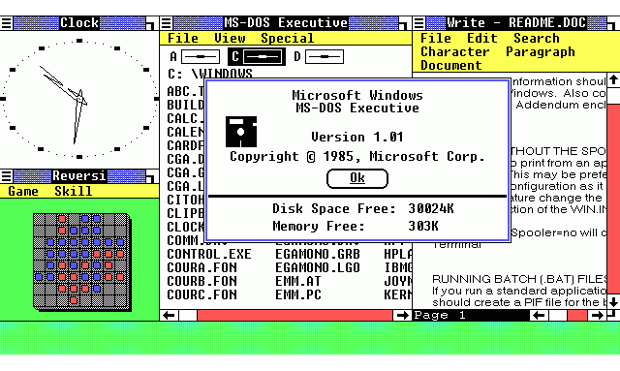
Windows 2
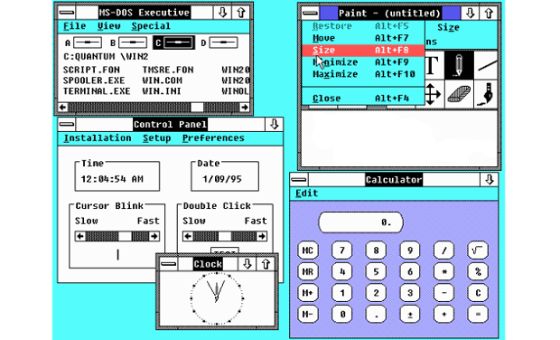
Windows 3
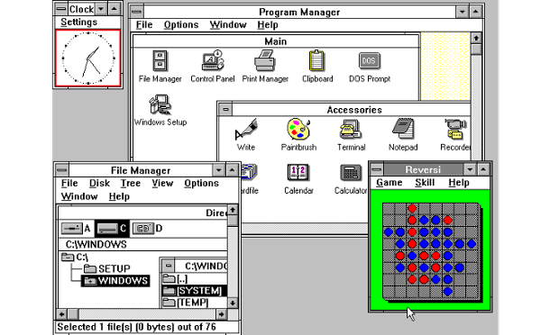
Windows 3.1
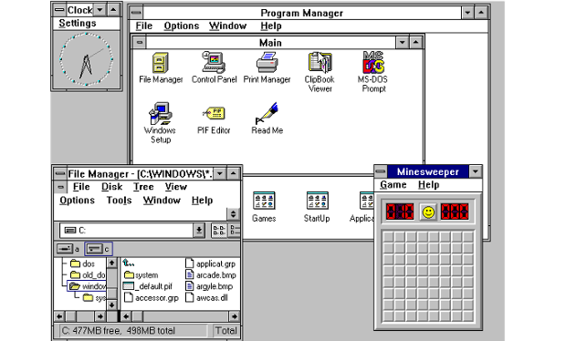
Windows 95
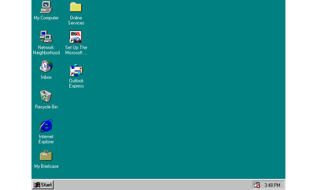
Windows 98
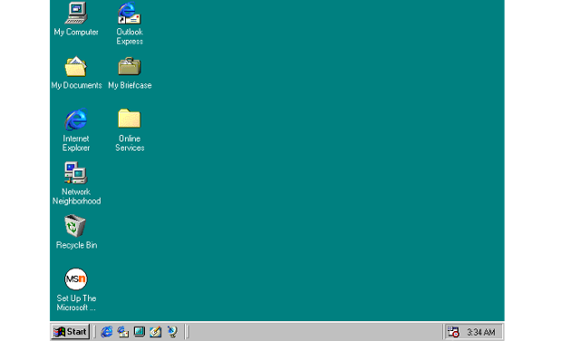
Windows 2000
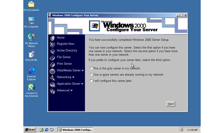
Windows XP
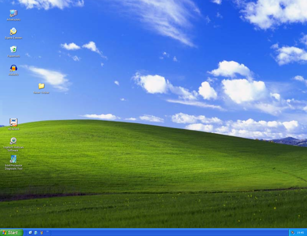
Windows Vista
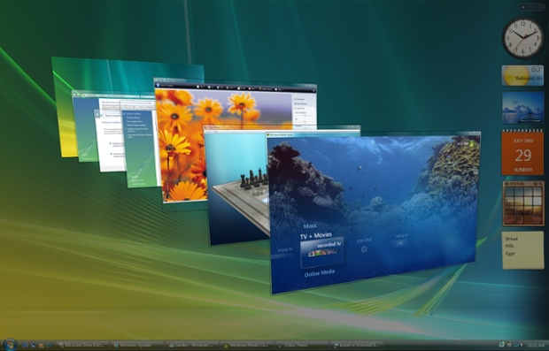
Windows 7
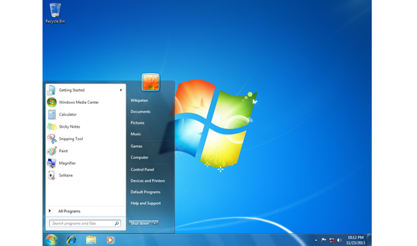
Windows 8

Windows 8.1
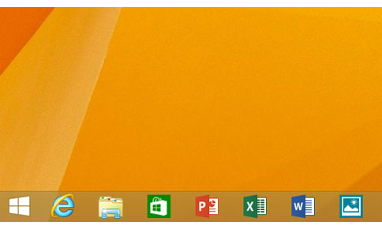
Windows 10